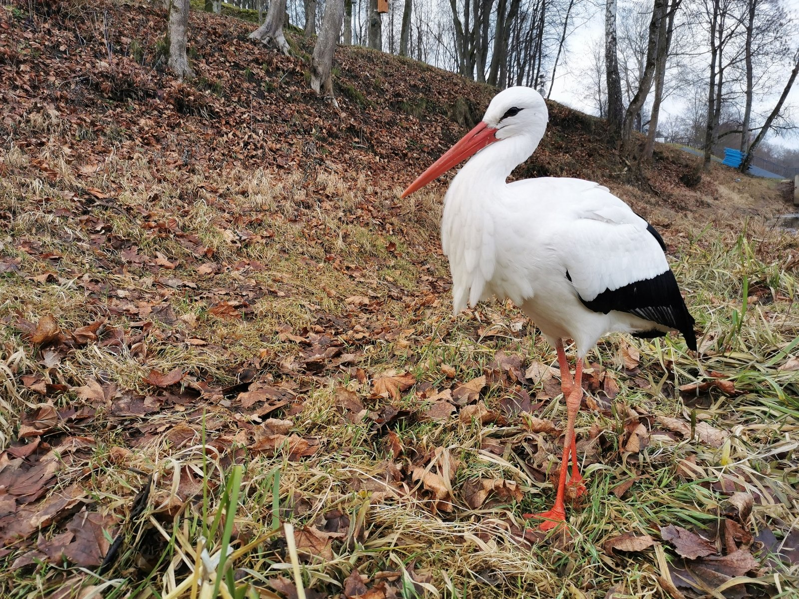
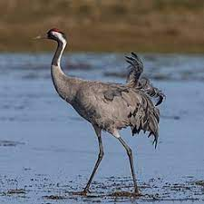
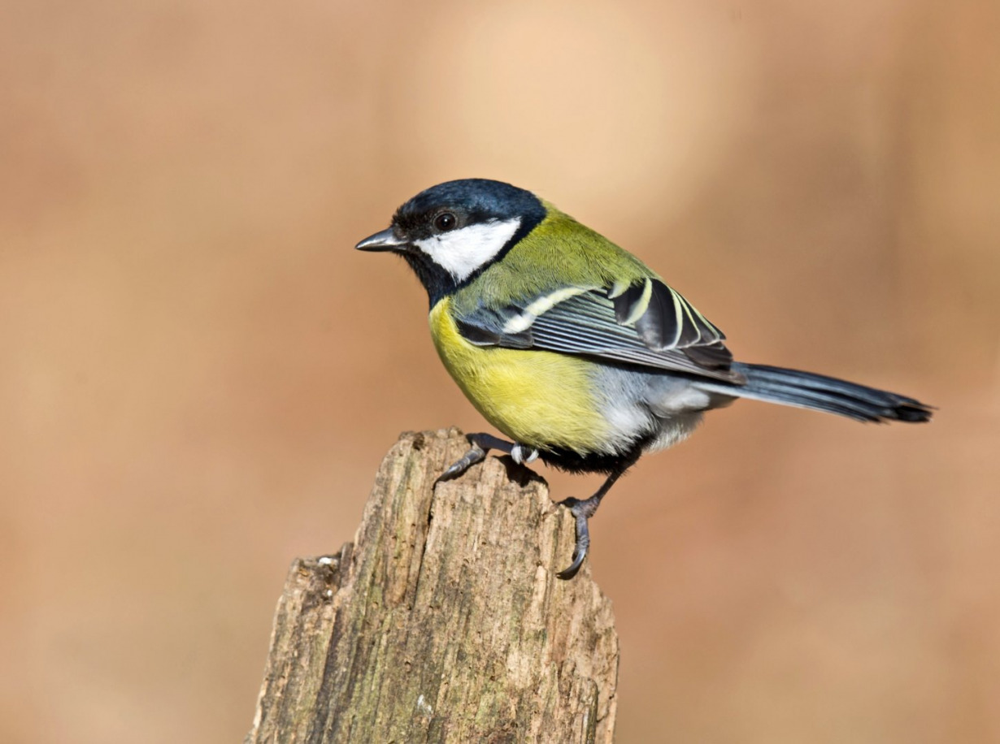
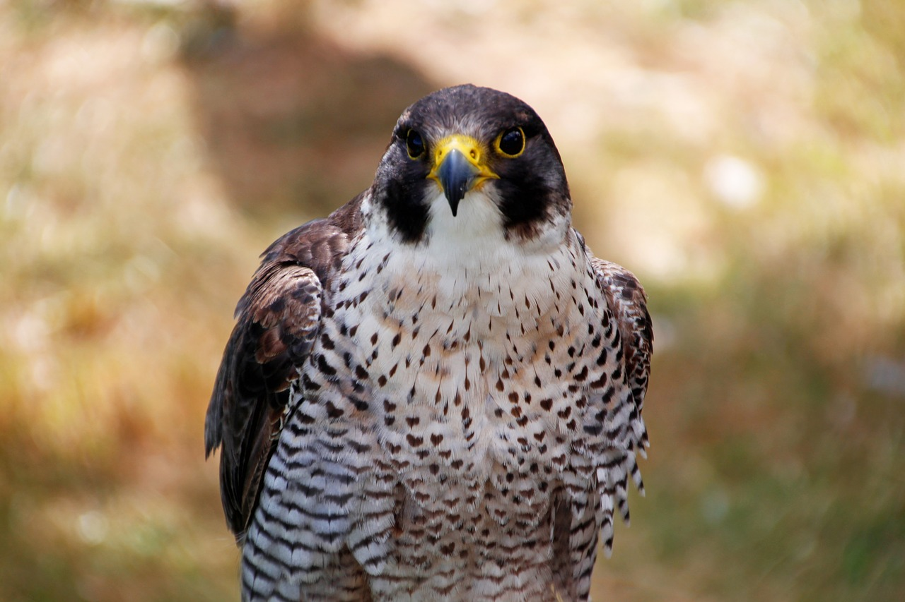

gandras
Tai didelis, ilgu snapu, ilgomis kojomis, ilgu kaklu paukštis. Visas kūnas baltas, tik sparnai juodi. Snapas ir kojos raudonos. Pasmakrė neplunksnuota ir raudona. Jauniklių sparnai juodi, rusvo atspalvio. Snapas ir kojos tamsiai rudos, bet po dviejų savaičių pasirodo ir antrasis pūkinis apdaras.

gervė
Pilkoji gervė tai už gandrą didesnis, ilgesnio kaklo ir ilgesnių kojų paukštis. Kūnas šviesiai pilkos spalvos. Kakta, snapo pamatas, pagurklis, sprandas ir sparnų galai juodi. Skruostai ir kaklo šonai balti. Ant pečių auga lenktos ir garbanotos plunksnos, kurios uždengia uodegą. Pakaušyje plika oda ryškiai raudona. Snapas rusvas. Kojos juodos. Jaunikliai pilkai rusvi.

zylė
Ilgauodegė zylė gerokai mažesnė už naminį žvirblį, išsiskiria itin ilga uodega. Kūnas baltas, nugara, antuodegis, sparnai, uodega juodi. Snapas trumpas, juodas. Kojos tamsiai raudonos.

sakalas
Blyškios formos apdaras (pasitaiko dažniau nei tamsios formos apdaru) primena sketsakalio, tik galvos raštas ne toks ryškus ir ne tokia kaštoninė papilvė. Tamsios formos patinų apdaras primena raudonkojį sakalą. Blyški linija visų plasnojamųjų plunksnų pagrinde yra išskirtinis šio paukščio apdaro bruožas.